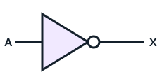
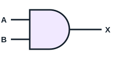
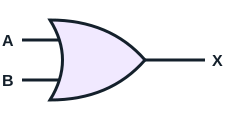
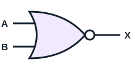
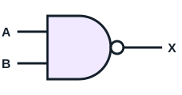
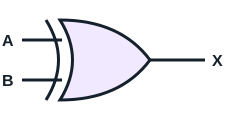
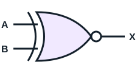
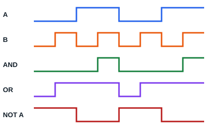

La parte de numeración, codificación y puertas lógicas viene del material de clase (en el aula aparece como «UT 2»). El resto está desarrollado a partir de la programación y se ampliará con lo que añada el profesor.
Un sistema informático reúne hardware (lo físico), software (los programas), datos y personas. Casi todos los ordenadores actuales siguen la arquitectura de Von Neumann: programa y datos se guardan en la misma memoria.
| Unidad | Qué hace |
|---|---|
| Unidad de control (UC) | Lee cada instrucción, la interpreta y da las órdenes |
| Unidad aritmético-lógica (ALU) | Hace los cálculos y las comparaciones |
| Registros | Memoria mínima y muy rápida dentro de la CPU |
| Memoria principal | Guarda programas y datos en uso |
| Entrada/salida | Comunica con teclado, pantalla, discos, red… |
| Buses | Llevan datos, direcciones y señales de control entre las unidades |
Un bit (b) es un 0 o un 1. Un byte (B) son 8 bits. La memoria se cuenta en potencias de 2 (cada escalón × 1024).
| Unidad | Símbolo | Equivale a |
|---|---|---|
| Byte | B | 8 bits |
| Kilobyte | KB | 1 024 bytes |
| Megabyte | MB | 1 048 576 bytes |
| Gigabyte | GB | 1 073 741 824 bytes |
| Terabyte | TB | 1 099 511 627 776 bytes |
| Petabyte | PB | 1 125 899 906 842 624 bytes |
| Exabyte | EB | 1 152 921 504 606 846 976 bytes |
| Zettabyte | ZB | 1 180 591 620 717 411 303 424 bytes |
| Yottabyte | YB | 1 208 925 819 614 629 174 706 176 bytes |
| Brontobyte | BB | 1 237 940 039 285 380 274 899 124 224 bytes |
| Geopbyte | — | 1 267 650 600 228 229 401 496 703 205 376 bytes |
Cuidado con la tabla del aula: usa «b» para byte y «Kb» para kilobyte, pero lo normal es B para byte y KB para kilobyte (b y Kb significan bit y kilobit). Brontobyte y Geopbyte no son unidades oficiales. La tabla les da a varios el mismo símbolo GB; aquí Geopbyte queda sin símbolo.
Los fabricantes de discos usan potencias de 10 (1 TB = 10¹² bytes). Para evitar líos existen los prefijos binarios: KiB, MiB, GiB, TiB (× 1024). Por eso un disco de 1 TB aparece en Windows como unos 931 GB: 10¹² ÷ 2³⁰ ≈ 931.
La velocidad de red se mide en bits por segundo y en potencias de 10: 1 Mb/s = 1 000 000 b/s. Para pasar a bytes, divide entre 8: 100 Mb/s ≈ 12,5 MB/s.
| Sistema | Base | Dígitos |
|---|---|---|
| Binario | 2 | 0 1 |
| Octal | 8 | 0–7 |
| Decimal | 10 | 0–9 |
| Hexadecimal | 16 | 0–9 A B C D E F |
Divide entre la base hasta llegar a 0 y lee los restos de abajo arriba. Ejemplo, 25 a binario: 25→1, 12→0, 6→0, 3→1, 1→1. Resultado: 11001.
Multiplica cada dígito por su peso: 11001₂ = 16 + 8 + 1 = 25. Y A7₁₆ = 10·16 + 7 = 167.
Cada dígito octal son 3 bits; cada hexadecimal, 4 bits. Agrupa desde la derecha: 10100111₂ → 1010 0111 → A7₁₆; → 10 100 111 → 247₈.
| Con 8 bits | Mínimo | Máximo |
|---|---|---|
| Sin signo | 0 | 255 |
| CA1 | −127 | +127 |
| CA2 | −128 | +127 |
| Decimal | Binario | Octal | Hexadecimal |
|---|---|---|---|
| 25 | |||
| 156 | |||
| 101101 | |||
| 17 | |||
| 3F | |||
| A7 |
| Decimal | Binario | Octal | Hexadecimal |
|---|---|---|---|
| 25 | 11001 | 31 | 19 |
| 156 | 10011100 | 234 | 9C |
| 45 | 101101 | 55 | 2D |
| 15 | 1111 | 17 | F |
| 63 | 111111 | 77 | 3F |
| 167 | 10100111 | 247 | A7 |
Cada grupo rwx son 3 bits, así que es un dígito octal (r = 4, w = 2, x = 1).
rwxr-xr-x, rw-r--r--, rwx------.rw-r-----, rwxr-x---, rwxrwxrwx.Una máscara /26 tiene 26 unos seguidos. La dirección de red se obtiene con un AND bit a bit.
El aula cita cinco archivos de ejercicios en Word que todavía no tengo. Estos cuatro siguen sus títulos, pero no son los del profesor.
Comprobar la paridad:
¿Qué bit de paridad par e impar lleva 1011001?
Tiene 4 unos, ya es par. Paridad par: 0. Paridad impar: 1.
1100 signo +, 1101 signo −.1111. Signo: 1100 +, 1101 −. Ejemplo: −3 = 1111 0011 1111 1101.| Precisión | Total | Signo | Exponente | Mantisa |
|---|---|---|---|---|
| Simple | 32 bits | 1 | 8 | 23 |
| Doble | 64 bits | 1 | 11 | 52 |
0 10001011 11010000000110000000000 S EXPONENTE MANTISA
0 10000100 10010100000000000000000
Signo positivo. Exponente 10000100 = 132; 132 − 127 = 5. Número binario: 1,100101 × 2⁵ = 110010,1. 110010₂ = 50 y 0,1₂ = 0,5. Resultado: 50,5.
En la diapositiva este ejemplo pone «2¹³¹» en una línea, pero el exponente es 132, como dice después.
Es el orden de los bytes en memoria. El número 0x12345678:
| Orden | Bytes, de menor a mayor dirección | Dónde |
|---|---|---|
| Big-endian | 12 34 56 78 | Protocolos de red |
| Little-endian | 78 56 34 12 | Procesadores x86-64 |
0 10000011 01000000000000000000000?| Carácter | ASCII decimal | Hex |
|---|---|---|
0 | 48 | 30 |
A | 65 | 41 |
a | 97 | 61 |
| Espacio | 32 | 20 |
ASCII usa 7 bits (128 caracteres). UTF-8 usa de 1 a 4 bytes y es compatible con ASCII: la ñ ocupa 2 bytes (C3 B1).
| Tipo | Formatos |
|---|---|
| Texto plano | .txt, .tex, .me, .lee, .md |
| Texto enriquecido | .rtf |
| Documentos | .doc, .docx, .odt |
| Imágenes (binario) | .bmp, .tiff, .raw, .jpg, .jpeg, .png, .dwg |
| Audio (binario) | CDA, WAV, WMA, MP3, AAC… |
| Vídeo (binario) | MPEG, OGG, VCD, SVC, AVI |
| Hojas de cálculo | .ods, .xls |
| Presentaciones | .odp, .ppt |
| Bases de datos | .mdb, .odf |
| Comprimidos | zip, gzip, bzip2, tar |

| A | X |
|---|---|
| 0 | 1 |
| 1 | 0 |






| A | B | AND | OR | NOR | NAND | XOR | XNOR |
|---|---|---|---|---|---|---|---|
| 0 | 0 | 0 | 0 | 1 | 1 | 0 | 1 |
| 0 | 1 | 0 | 1 | 0 | 1 | 1 | 0 |
| 1 | 0 | 0 | 1 | 0 | 1 | 1 | 0 |
| 1 | 1 | 1 | 1 | 0 | 0 | 0 | 1 |

| A | B | C | A·B | C′ | X |
|---|---|---|---|---|---|
| 0 | 0 | 0 | 0 | 1 | 1 |
| 0 | 0 | 1 | 0 | 0 | 0 |
| 0 | 1 | 0 | 0 | 1 | 1 |
| 0 | 1 | 1 | 0 | 0 | 0 |
| 1 | 0 | 0 | 0 | 1 | 1 |
| 1 | 0 | 1 | 0 | 0 | 0 |
| 1 | 1 | 0 | 1 | 1 | 1 |
| 1 | 1 | 1 | 1 | 0 | 1 |
| Dato | Windows | Linux |
|---|---|---|
| Resumen del equipo | msinfo32, systeminfo | hostnamectl, sudo dmidecode |
| CPU | Administrador de tareas | lscpu |
| Memoria | Get-CimInstance Win32_PhysicalMemory | free -h |
| Discos | Get-Disk | lsblk |
| PCI y USB | Administrador de dispositivos | lspci, lsusb |
| Nombre y red | hostname, ipconfig /all | hostname, ip a |
Anota de tu ordenador: nombre, CPU y núcleos, RAM, tipo de disco y dirección MAC. Di qué comando has usado para cada dato.
En Windows: hostname, msinfo32 (CPU, núcleos, RAM), Get-PhysicalDisk (tipo de disco) y ipconfig /all (MAC). En Linux: hostname, lscpu, free -h, lsblk -d -o NAME,ROTA,SIZE (ROTA 0 es SSD) e ip link. Tus resultados dependerán del equipo.
| Concepto | Qué significa |
|---|---|
| Núcleos | CPU independientes dentro del chip |
| Hilos | Tareas simultáneas que admite |
| Frecuencia | Ciclos por segundo, en GHz |
| Caché L1, L2, L3 | Memoria rápida interna |
| Arquitectura | x86-64 (Intel, AMD) o ARM |
| TDP | Calor que hay que disipar, en vatios |
| Tipo | Volátil | Para qué |
|---|---|---|
| RAM (DDR4, DDR5) | Sí | Programas y datos en uso |
| ROM | No | Firmware, apenas se modifica |
| Flash | No | SSD, memorias USB, UEFI |
Más arriba en la pirámide, más rápido y más caro: registros → caché → RAM → SSD → HDD.
Entrada: teclado, ratón, escáner. Salida: monitor, impresora. Mixtos: pantalla táctil, disco. Los adaptadores (gráfica, red, sonido) amplían el equipo por PCIe o USB.
Consulta siempre el manual técnico de la placa: dice qué CPU y RAM admite, y qué conector es cada uno.